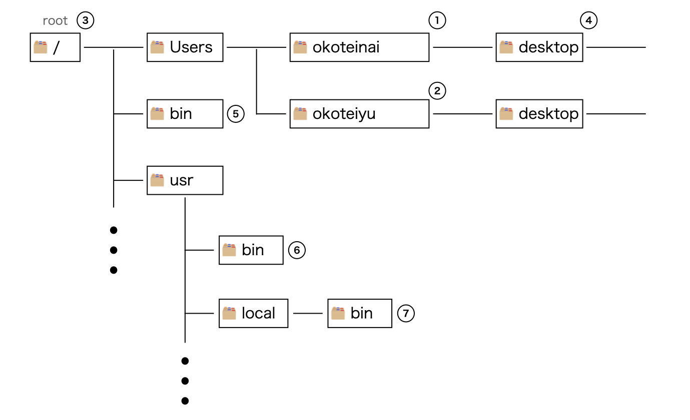

Mac OS(Macintosh) とは、コンピュータの OS の種類の一つです。
ターミナルとは、ユーザが Mac OS に命令を行うためのインターフェース(窓口) です。Finder → 上部バーの「移動」項目から「ユーティリティ」に移動すると「ターミナル」というアプリがあります。ターミナルを開くと、以下のような表示の画面が出てくると思います。
Last login: Mon Oct 30 06:49:52 on ttys036
[ユーザ名]@[PC名]noMac-mini ~ %
% の右側にカーソルが出てると思います。この行のことをコマンドラインと言い、OS に命令を行う際はこのコマンドラインに命令を打ち込みます。% の左に ~ とありますが、これは命令を実行する (PC上の) 地点 (現在の作業フォルダ) がログインユーザのフォルダであることを意味しています。
Mac OS は基本的にフォルダやファイルを以下のような構造で管理します。

もしも okoteiyu としてログインしているなら、~ は ① のフォルダを指します。同様に、okoteiyu としてログインしているなら、~ は ② のフォルダを指します。
また、PC のフォルダ構造における地点を表す表記として「パス」というものがあります。パスはフォルダやファイル名を / で繋げて表記されます。例えば ./nx/Dir/file1 というパスは、現在いるフォルダからを表す . から nx → Dir → file1 と移動したもの、すなわち nx フォルダ内にある Dir フォルダ内の file1 ファイルを指します。このように現在の作業フォルダを始点とするファイルパスを相対パスと言います。
それに対して、パスは先頭を / から始めることで、図の ③ の root から始まるパスを記述できます。例えば、① のパスは /Users/okoteiyu と表記できます。これを絶対パスと言います。
というわけで、ターミナルを開くと /Users/[ログイン中のユーザ] の地点で命令を実行するためのコマンドラインが開かれます。実行を行う場所を変更したい場合は、cd という命令でフォルダを移動することができます。例えば okoteiyu がターミナルを開いて cd desktop と命令すると、現在地が ④ に移動します。それ以降、コマンドラインで実行する命令は /Users/okoteiyu/desktop にて実行されることになります。
コマンドラインでコマンドを \(X\) と打ち込むと、名前が \(X\) の実行ファイルのプログラムを実行できます。ただし、コマンドラインから呼び出すことができる実行ファイルは置かれる場所が決まっているため、PC 上のどこかに実行ファイルがあるからといって、常にそれをコマンドラインからコマンドで実行できるとは限りません。
以下の図を確認すると、bin という名前のフォルダが \(3\) つあることに気付けます。これらに置かれている実行ファイルは、デフォルトの状態で呼び出し可能です。
これら \(3\) つのファイルはコマンドラインで使用する命令の実行ファイルを以下のように分類して管理します。
なお、⑤ などの重要なフォルダを編集するためには管理者権限というものが必要になります。通常のユーザはフォルダ編集に関して制限がかけられています。
/bin , /usr/bin , /usr/local/bin などにはコマンドの実行ファイルが置かれていることは先述の通りです。ターミナル (以降、zsh (ゼットシェル) と表記) にコマンドが打ち込まれた時、zsh はこれらのフォルダを参照して打ち込まれたコマンドに対応する実行ファイルを探し、同名の実行ファイルが見つかったらそれを実行します。 zsh がコマンドを参照するフォルダは自分で自由に決めることができます。例えば上に挙げたデフォルトのパス以外に、/Users/okoteiyu/desktop に置かれている実行ファイルをコマンドとして参照するようにしたい場合、/Users/okoteiyu/desktop に パスを通す と呼ばれる作業を行います。
OS には環境変数というものが存在します。特に PATH という環境変数は、zsh がコマンドを見つける際に参照する環境変数です。/Users/okoteiyu/desktop の実行ファイルをコマンドとして使うためには、zsh が /Users/okoteiyu/desktop を参照するように PATH を編集する必要があります。
環境変数を編集するためには、~ フォルダに置かれている .zshrc ファイルを編集します。ターミナルから open コマンドで .zshrc を開いても良いですが、今回は Finder から開きましょう。.zshrc などの重要なファイルやフォルダは元々は Finder 上に表示されていないはずです。そこで、 shift + command + . で .zshrc ファイルを含む全てのファイルやフォルダを Finder 上で表示させることができます。
.zshrc ファイルを開いたら、以下のように書き込むことで PATH を変更することができます。
export PATH="[通したいパス]:$PATH"
例えば /Users/okoteiyu/desktop にパスを通す場合は、以下のように追記します。この時、余計な空白や改行が入ってはいけません。
export PATH="/Users/okoteiyu/desktop:$PATH"
これで okoteiyu の デスクトップ に置かれている実行ファイルをコマンドとして利用できるようになりました。>ただし zsh は起動時に .zshrc を参照するので、変更を反映したい場合は ターミナルを再起動する必要があります。
PATH の他には alias というものもあり、alias をいじることでコマンドのエイリアスを自由に決めることができます。例えば python のバージョンが \(10000000\) になったら、python コマンドの実行のたびに python10000000 と打つことになります。しかし毎回このコマンドを打つのは大変なので、.zshrc に以下の行を追加し python コマンドのエイリアスを作成すると良いでしょう。
alias python='python10000000'
これによって python10000000 と打たずとも python と打つだけで python10000000 を実行できるようになりました。
Mac OS にはデフォルトでプログラミング言語の C++ と python2 がインストールされています(2018 年情報)。python2 はもはや python とは呼べない代物なので、python3 を使うためには嫌でも環境構築を行う必要があります。
そこで Mac OS ユーザたちは Homebrew というツールを用います。Homebrew とは Mac OS のためのパッケージ管理ツールです。パッケージとは、プログラムを動かすために必要な物のかたまりのことで、Homebrew はパッケージのインストールやバージョンの管理などを行なってくれます。
Homebrew を使えるようにするためには、ターミナルで以下のコマンドを実行します。
/bin/bash -c "$(curl -fsSL https://raw.githubusercontent.com/Homebrew/install/HEAD/install.sh)"
これにて、Homebrew のコマンドを使えるようになったはずです。Homebrew のコマンドは brew です。Homebrew がインストールされたかどうかを以下のコマンドで確かめます。
brew -v
これは Homebrew のバージョンを確認するコマンドです。
brew でパッケージをインストールする際は、以下を打ち込みます。
brew install [パッケージ名]
brew によってインストールされたパッケージのコマンドは /opt/homebrew/bin というディレクトリに保存されるので、これらのコマンドを実行するためにパスを通しておいてください。なお、昔の Mac では /usr/local/bin に置かれていたようです。